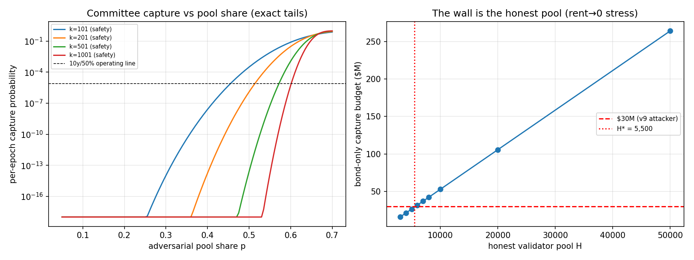

In plain language
Companion to RESULTS - v11.0 Validator Capture & Sortition.md. The new Protocol Architecture proposes that EDEN's ledger be guarded not by whoever owns the most coins, but by ordinary verified people chosen by lottery — like jury duty. This simulation asked the obvious hostile question: what would it cost to pack that jury? The pass/fail lines were written down before the code existed.
The setup, in courtroom terms
Every hour, EDEN's ledger is checked by a jury of 201, drawn at random from a pool of about 20,000 volunteers. Every juror is a verified real person (one seat per human, ever), and every juror posts a deposit they lose — along with their one-and-only EDEN identity — if they're caught cheating. To rewrite the record (steal, double-spend, falsify), an attacker needs two-thirds of a jury. To merely jam the courtroom (block transactions), one-third.
The attacker gets every dirty trick we could price: renting stolen identities in bulk, manufacturing fake people, bribing sitting jurors, or being a hostile government that simply orders its citizens to serve.
What the drills found
Drill 1 — buying the verdict. You can't bribe your way to a rigged jury cheaply, because you never know who'll be drawn — you'd have to own half the entire pool. The cheapest path we could find (renting compromised identities in bulk, at pessimistically cheap prices) costs about $613 million — twenty times the war chest that crashed the currency's price in the v9 stress test. And bribing sitting jurors turns out to be the most expensive route, not the least: cheating on a jury leaves cryptographic fingerprints, and a caught juror loses their deposit and their once-in-a-lifetime identity. You are not asking someone to take a bribe; you are asking them to sell their whole EDEN life at near-certain risk of losing it.
Drill 2 — the surprise: the fake-people dial barely mattered. We expected the story to be "the dirtier the ID rolls, the cheaper the takeover." Measured: almost flat. Even a registry with only half a percent rot offers more rentable identities than the attack needs — what actually stops the attacker is that every seat still costs a deposit, and there are simply a lot of honest seats to outnumber. The real wall is the size of the honest volunteer pool. With 20,000 honest jurors, you're safe by a wide margin; the drill puts the danger line at about 5,500. Below that, packing the jury costs less than attacks we already know people will fund. Moral, in one sentence: this system's security is measured in willing citizens, not in dollars — so the number of honest volunteers should be watched on a public dashboard, exactly like the safety-net reserve.
Drill 3 — jury size is not a detail. A jury of 101 lets a one-quarter infiltrator jam about 3% of all sessions — too much. A jury of 201 cuts that to under half a percent. Bigger juries are like more voters in an election: the same share of bad actors matters less and less.
Drill 4 — the hostile government. A state can force its own citizens to serve — for free. The defense is a quota: no single country (or ID office, or hosting company, or software vendor) may ever hold more than 15% of a jury. Measured result: it takes three colluding governments to jam the courtroom and five to rig a verdict. Tyranny becomes a coalition problem, and coalitions of five are loud.
Drill 5 — the roads not taken, run under the same rules. In a buy-your-power system (how most blockchains work), guarding a young network this size costs an attacker about $100M to rig and $50M to jam — and when the coin's price crashes 72%, the cost of attacking crashes 72% with it, because the security is the coin. EDEN's jury got only ~12% cheaper to attack in the same crash, because real verified humans don't go on sale when a chart goes red. And the "just keep a permanent committee of twelve trusted institutions" road? Two court orders, served in the right two countries, shut it down — and nobody can walk away and rebuild, because a members-only ledger belongs to whoever captures the members. That's why the founding federation must be scaffolding, never the building.
The one-line verdict
You can't buy the jury without buying half the town, you can't rent it without paying more than the town is worth to you, and you can't conscript it without three governments conspiring in public — provided the jury stays big (201+), the volunteer pool stays deep (20,000+, watched publicly, wall at ~5,500), the quotas stay enforced, and the one thing this drill assumed — that every juror is a real, live, unique human — is exactly the identity problem the pilot still has to prove in the wild.
Usual honesty: calculator-grade drills with stated dials; bars registered before the code existed; both seeds agree with the exact math; the identity layer is priced around, not through. Run and written by Claude Fable 5, July 7, 2026.
Figures

Technical results
Run: July 7, 2026. Spec: v11 SPEC - Validator Capture & Sortition (registered).md — bars V0–V6 fixed before code. Engine: validator_capture_sim.py; committed artifacts: results_v11.json, fig_v11_capture_curves.png. Seeds 7 + 11 on the Monte-Carlo harness; all committee tails computed exactly (hypergeometric), MC used only to validate the harness. Every number below traces to results_v11.json.
Verdict in one line: civic validation holds at the program's reference attacker budgets — the cheapest safety capture costs ~$613M, 20× the v9 attacker — and the run surfaced the mechanism's true load-bearing wall, which is not the registry fraud rate but the size of the honest volunteer pool (H* ≈ 5,500).
Bar summary (11/11 as registered, including both expected-fail brackets)
| Bar | Registered | Measured | Result |
|---|---|---|---|
| V0 harness | MC (seeds 7+11) within 3σ of exact tails, seeds agree | safety cell: 18 & 18 events vs 15.8 expected (3σ = 11.9); liveness cell agrees | PASS |
| V1 safety budget | ≥ $300M | $613.1M (rental mix, 21,143 seats) | PASS |
| V2 censorship k=201 | ≤ 1% epochs at p=25% | 0.483% | PASS |
| V2 censorship k=101 | registered expected FAIL | 3.16% — fails the 1% bar as registered | PASS (bracket) |
| V3a bond-only floor @H=20k | ≥ $100M | $105.7M | PASS — thin (5.7% margin) |
| V3b H* < 20,000 | publish H*; fail if ≥ 20k | H* = 5,500 | PASS |
| V4 caps arithmetic | 3 cohorts liveness / 5 safety; 34% single cohort wins uncapped | 3 / 5 / true | PASS |
| V5 civic/PoS safety | ≥ 5× | 6.1× ($613M vs $100M) | PASS |
| V5 civic/PoS liveness | ≥ 3× | 4.5× ($224M vs $50M) | PASS |
| V6 crash drop | ≤ 25% | 12.4% ($613M → $537M) | PASS |
| V6 post-crash ratio | ≥ 10× | 19.1× ($537M vs $28.2M) | PASS |
The operating points (k = 201, H = 20,000, hourly epochs, 10-year horizon)
To reach a 50% chance of even one safety capture (⅔ of a committee) in ten years, the adversary must hold p = 51.4% of the validator pool — 21,143 seats against 20,000 honest. The per-epoch capture probability at that point is 7.9×10⁻⁶ (the operating line in the figure). For meaningful censorship (5% of epochs blockable), p = 27.9% — 7,719 seats. Sortition's compounding works for the defense: below these shares, capture probability falls off a cliff (10⁻¹⁰ and beyond within a few points of p) — an adversary cannot be "a little bit" of a threat.
Findings
F1 — The cheapest attack is renting rot, and it still costs $613M. Channel comparison at central dials (JSON V1.channels): rental mix $613.1M · manufactured identities $1.63B · bribing incumbents $1.66B (10,286 seats × ~$161k — the one-lifetime identity makes safety bribery the most expensive channel, exactly as the architecture argued: equivocation is self-evidencing, so accepting that bribe prices in near-certain loss of a whole EDEN life). For liveness the ordering tightens (rental $224M, bribery $283M) because omission is deniable (q = 0.3) — censorship is the softer surface, as BFT folklore predicts.
F2 — The registry-rot dial did not move the budget; the honest-pool dial is the whole game. Registered expectation was a budget-vs-f curve; the measured curve is flat at $613M across f = 0.5%–25% (JSON V3.budget_vs_f) because even 0.5% rot of a 5M registry (25,000 identities) exceeds the 21,143 seats the attack needs — supply never binds at pessimistic-cheap flat rental pricing. The circularity's price concentrates instead in H: under the rent→0 stress, the bond-only capture budget is linear in the honest pool (figure, right panel), crossing the $30M v9-attacker line at H* = 5,500. The mechanism's security is denominated in honest participation. A 20k pool gives $105.7M of bond-floor security; a 5k pool is capturable for the price of the v9 run. This makes honest-pool size a gate-15 quantity to be monitored live, like reserve months.
F3 — Committee size is load-bearing, shown by breach (the registered bracket). k=101 censors 3.16% of epochs at p=25% (fails the 1% bar as registered); k=201 passes at 0.483%; and the safety share p* rises with k (45.5% → 51.4% → 57.2% → 60.1% for k=101→1001, JSON V3.p_star_vs_k). Larger committees purchase real security at linear certification cost — k=201 is defensible, k=101 is not, k≥501 is comfortable.
F4 — The caps convert coercion from a takeover into a coalition problem. With the 15% per-cohort committee-weight caps: 3 colluding jurisdiction-scale cohorts to threaten liveness, 5 for safety; without caps, one 34% cohort censors alone. The caps' work is exactly the architecture's claim: free identities are cohort-correlated, and correlation is capped.
F5 — Counterfactuals, measured (the convention). Stake-weighted PoS at young-chain scale ($100M cap): safety $100M, liveness $50M including 1.5× impact — civic costs 6.1× / 4.5× more to capture, and the gap widens to 19.1× after a v9-grade crash (V6: civic falls 12.4% because only bonds crash; identity costs are EBI-real; PoS security falls with the price it is made of). Personhood-denominated security is counter-cyclical where stake-denominated security is pro-cyclical — the consensus-layer echo of "protect people, concede price." Permanent PoA (12 institutions / 8 jurisdictions): 2 legal orders in the right two jurisdictions halt the chain; 4 finalize capture; and a permissioned chain cannot be forked away from its captors. This is the measured case that Stage B federation must be a stage, not a destination.
F6 — The thin pass, flagged. V3a cleared its $100M bar by 5.7%. At these dials the bond floor is $5,000 × 21,143 seats; a smaller bond, smaller honest pool, or lower safety-probability target erodes it directly. Bond size and H belong together in gate 15.
Gate-15 candidate (proposed numbers, published whatever they are)
(a) Honest bonded pool H ≥ 20,000 with public live monitoring (the H* = 5,500 wall at ≥ 3.6× margin); (b) committee size k ≥ 201; (c) per-cohort committee-weight cap ≤ 15% across all four dimensions (jurisdiction/registrar/hosting/client); (d) bond ≥ $5,000-equivalent EBI-real-indexed (V3a margin is thin in token terms after crashes — index the bond); (e) published capture-budget table re-measured whenever H, k, bond, or cohort composition changes materially (playbook C.4).
Honest limits (from the spec, carried)
f, rental prices, and bribery acceptance are dials standing in for L0 and real corruption markets — this run prices the mechanism around the identity layer, never through it (gates 9/14 unmoved). The adversary optimizes channel choice only: no adaptive enrollment timing, no cohort laundering (cap evasion), no client exploits, no DoS/partition attacks on the BFT layer itself. Coordination for a 21,000-seat conspiracy is priced at zero (maximally pessimistic in the attacker's favor); enrollment-velocity telemetry that would flag 21,000 seats arriving is not credited to the defense (also attacker-favoring). The flat rental price is pessimistic-cheap — a scarcity-priced rot market would only raise attack costs. Existence-and-shape under stated dials — not a forecast, and not a substitute for the out-of-family human replication the whole program still owes.
Feeds: gate 15 (proposed above); ratification-readiness of 01 Canon/EDEN Protocol Architecture v0.1 §4 (its §11 asked for this run); the aggregator-collusion pass remains owed. Run and written by Claude Fable 5, July 7, 2026. Bars as registered; none moved.
Raw data